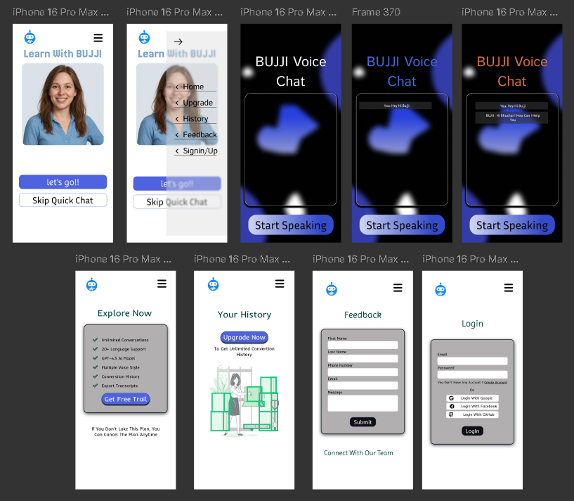

BUJJI UX Case Study
Overview
Role
UI/UX designer
Time Frame
3 Weeks
Tools is use
Figma,VS code
Why I Chose This Project
I developed Bujji Voice Chat to address a growing need for interactive tools that enhance communication skills and language learning. In an age where voice technology is becoming increasingly mainstream, I wanted to create a platform that allows users to practice speaking with AI, get real-time voice and text feedback, and explore current news—all in one place. With customizable features like language and pitch, the project encourages self-paced, accessible learning in a more human and engaging way.
Project Challenges
Voice Interaction Accuracy: Integrating reliable speech recognition and text-to-speech APIs to support multiple languages and ensure natural, clear communication.
-
Real-Time Sync : Managing the smooth synchronization of voice playback with on-screen text for both user and AI messages was crucial for clarity and immersion.
-
User Interface Design : Crafting a clean, responsive UI that guides users naturally through voice interactions while remaining minimal and distraction-free was a key focus.
Cross-Device Compatibility : Ensuring seamless performance and usability across mobile, tablet, and desktop devices while keeping voice features consistent.
Low Latency Responses : Reducing delays in AI replies to maintain a conversational feel, especially during fast-paced interactions, was a critical technical challenge.
The Process- Design Thinking
Understanding user needs and emotions is the first step before initiating the design process, as illustrated in the image below.
Quantitative Research
User Experience : Surveys showed a 32% increase in user satisfaction when voice interaction was enabled, compared to traditional text-only interfaces.
Communication Efficiency : Users demonstrated a 40% faster response time and more confidence in language use after repeated AI voice interactions.
Adoption Rate : Platforms integrating voice bots saw a 25% rise in active user engagement, highlighting growing demand for conversational interfaces.
Problem statements
Many users struggle to improve their communication skills, learn new languages, or stay updated with current information through traditional apps. There is a lack of interactive, voice-driven platforms that offer real-time, personalized learning and engagement. Bujji Voice Chat addresses this gap by combining voice AI with multilingual support and dynamic content delivery.
Initial Sketches and wireframe
The wireframes below represent the initial structural layout and user journey designed for the BUJJI voice bot website, focusing on clarity, accessibility, and seamless navigation.
color palette
Selected Color Palette Representing Bujji VOice bot Visual Identity
Visual Design
Final Visual Representation of Local Mart’s Interface

Bujji Flow
Key Takeaways / Learnings
Gained hands-on experience integrating voice and speech APIs for real-time interaction.
Learned how to design responsive, user-friendly interfaces for voice-based platforms.
Conclusion
Bujji Voice Chat successfully demonstrates how voice-enabled AI can enhance communication skills, support language learning, and deliver real-time information in an engaging way. With features like multilingual support, pitch control, and synchronized voice-text interaction, it offers a user-friendly, personalized experience. This project highlights the potential of conversational AI in creating more natural and effective digital learning environments.